To render an image, we need to compute a ray to trace from the virtual camera position to objects in the virtual world, and then trace that ray to find its intersection with the nearest object, and set the color value of the corresponding pixel in the image to the radiance value at that intersection point. In this part, I generate the ray, compute the radiance value of each pixel in the image space, and compute the intersection points for triangles and spheres.
First, I implemented a ray generation function that takes x- and y- coordinates from the (2D) image space, produces a ray that goes through their corresponding coordinates in (3D) camera space, and finally returns that ray vector transformed into a ray in world space. The conversion to camera space from image space involves computing the origin point of the ray, which we set to (0, 0, 0) to represent the camera's location in 3D camera space, and computing the direction, which is the vector that passes through the point on the image sensor plane centered at (0, 0, -1) with a width defined by the total viewing angle (in degrees) hFov and height by vFov. To compute this point, I performed the following calculations on the given x- and y- image space coordinates:
sensor_x = tan(radians(hFov) * (x - 0.5))
sensor_y = tan(radians(vFov) * (y - 0.5))
sensor_z = -1.0
I then defined a vector passing through the camera location and these new coordinates, and normalized it as the direction vector of the ray. Lastly, I transformed the camera space vector into world space by multiplying it with the given c2w transformation matrix, and set the ray origin point to the given pos value.
I then implemented a function that generates a light value (radiance) for each pixel in the image space by tracing a random sampling of rays over the span of one pixel and setting the final radiance to the Monte Carlo estimate, which averages the randomly sampled values. To do this, I ran a loop to generate num_samples rays using the ray generation function I implemented previously, passing in the normalized x- and y- values for the given pixel, after offsetting x and y by a random float value between 0.0 and 1.0 to get multiple random samples within a single pixel. For each ray, I used the given est_radiance_global_illumination function to obtain the radianc value and add that to a running sum, which I then divided by the total num_samples after the loop. I lastly updated the sampleBuffer (containing the final image values) with the estimated radiance value for the given pixel.
Given a traingle defined by three points in the world space, I needed to implement a function that computes the intersection between a ray and the triangle. The intersection (if it exists) is at the point
p(t) = o + td
where o and d are the origin point and direction of the ray respectively. This t value can be obtained by passing in the point p(t) into the plane equation
(p(t) - p') • N = 0
where N is the vector normal to the plane and p' is some point on the plane itself. But since I am computing the intersection with a triangle on that plane, I need to see if p(t) is additionally within the actual boundary of the triangle and not just the surrounding plane. This can be done by computing the 3 barycentric coordinates between p(t) and the three points defining the triangle--if each of the barycentric coordinates is between 0.0 and 1.0 and they all sum to 1.0, then p(t) is in the triangle. I used the Moeller Trumbore algorithm to compute t and the barycentric coodrinates. I use the barycentric coordinates to check if p(t) is in the triangle, and if so, to update the vector normal at the intersection to be the weighted average of the normal vectors at the triangle's vertices. I update the intersection's t-value to be the t at which the ray hits the triangle at p(t).
Sphere intersection is similar in general structure to the triangle intersection function, although with a sphere there can be up to 2 intersection points, and computing their t-values involves a different calculation. The intersection points are defined by
(p(t) - center)^2 - R^2 = 0
where center is the center point of the sphere and R is the radius. This is a quadratic that yields two p(t) values and thus two t-values. For ray tracing, we only want the nearest intersection point, which is the point with a smaller t-value. I then update the intersection t-value as in the triangle intersection function, and then compute the normal vector at the intersection point to be the vector passing through the center of the sphere and the intersection point p(t).
At this point, we can render the following images composed of triangle and sphere primitives:
|
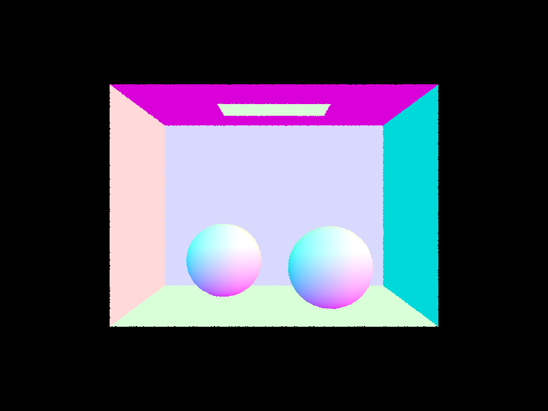
|
| 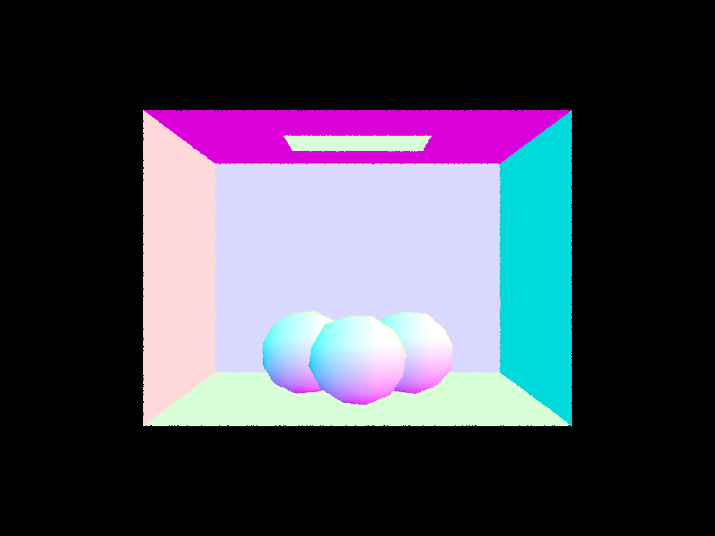 |
| 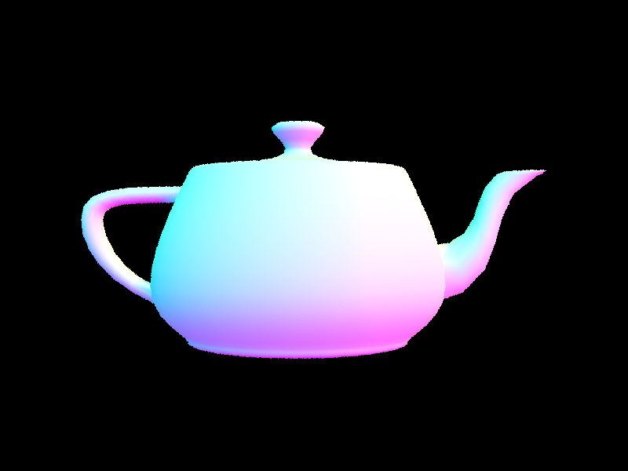 |
The purpose of this part was to significantly speed up the rendering process by using a bounded volume hierarchy (BVH) tree. What the BVH does is partition all of the primitives in the space into two bounded boxes, and then split those boxes and so on until we have a binary tree of bounded boxes (nodes) whose leaves contain a constant number of primitives. This way, we can perform a binary search for intersections between a given ray and the primitives in the space rather than linearly searching for an intersection between the ray and every primitive that exists. More specifically, the runtime for computing intersections for a given ray in Part 1 was O(n), whereas using the BVH gives a runtime of O(log(n)).
There are many ways one could split up the bounding boxes to partition the primitives. Because we are working in 3D space, we have three choices for splitting a bounding box (along the x, y, or z axis). I pick the longest axis in the given bounding box to split along. Then, I sort all of the primitives in that bounding box (node) by their value along the axis I chose, and split the sorted list in half. I allocate the half with smaller values to node->left and the other half to node-> right, and recurse on each of those nodes, splitting them until the nodes contain max_leaf_size primitives, in which case they are leaves of the tree.
We can now render pretty large .dae files like the following much more quickly:
|
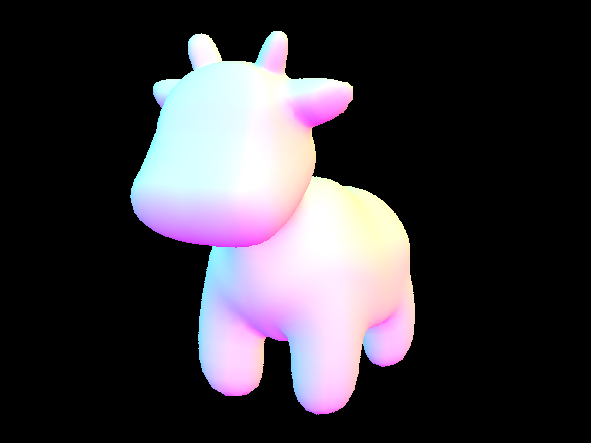
|
|
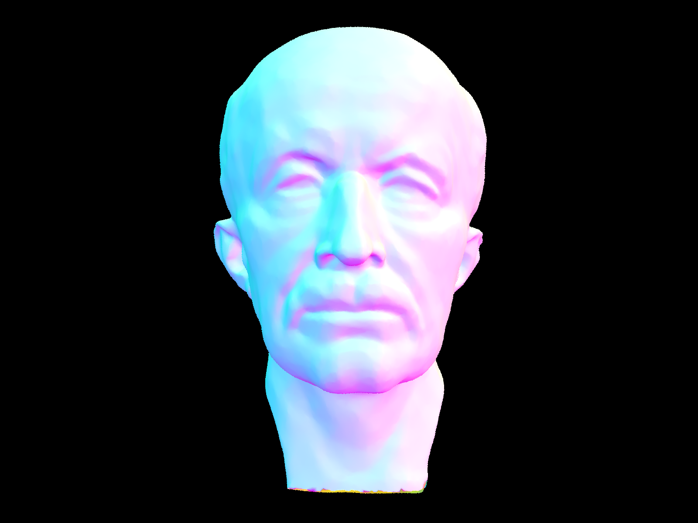
|
|
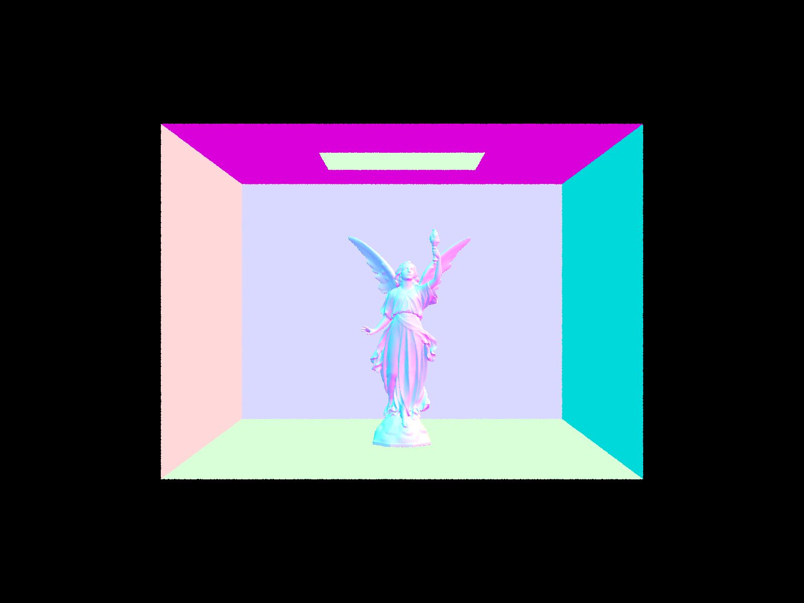
|
| .dae file | Runtime without BVH | Runtime with BVH | Speedup (x faster) | image |
|---|---|---|---|---|
| CBgems.daee | 10.2554s | 0.9201s | 11.146 times faster | |
| teapot.daee | 119.5403s | 1.1988s | 99.7166 times faster | |
| banana.dae | 127.6098s | 0.9993s | 127.699 times faster | 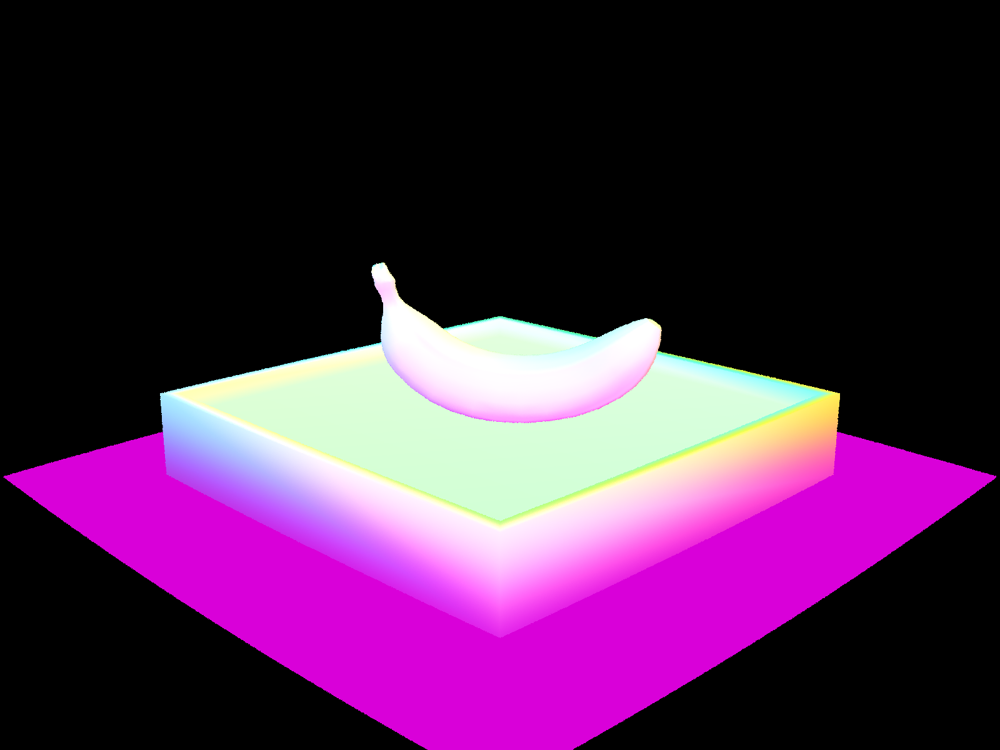 |
In this part of the project, we want to render the scene by tracing rays to an initial hit point in the scene, and then tracing rays out in order to calculate how much light is hitting that object from light sources in the space. This is essentially finding the "one-bounce" radiance for pixels in the image, since we consider the direct light hitting only one surface in the scene before beign reflected back to the camera. The only materials we are handling here are diffuse, meaning they reflect light uniformly in all directions. There are two methods to calculate the radiance upon a surface in the scene: first, by uniform hemisphere sampling; and second, by importance sampling.
In this first method of direct illuination, we calculate the radiance on a surface point in the scene by sending rays outward from that point in randomly sampled directions over a hemisphere centered at that point. Then, we find where those rays intersect and collect the outgoing radiance of the object intersected (this will be zero for all objects that aren't light sources). Using these radiance values, we compute the Monte Carlo estimate of the single radiance value at the hit point. This is the sum, divided by the total number of samples, of the radiance values (L_i) multiplied by the BSDF of the camera ray and the randomly sample outgoing ray at the hit point (f_i), the cosine of the angle between the hit surface normal and the randomly sampled ray vector (cos_theta_i), and the inverse of the PDF (which is 2*pi for diffuse materials):
sum(L_i * f_i * cos_theta_i * pdf_inverse) / num_samples
The hemisphere sampling method yields a noisy image since we sample random rays out from a surface point, even though only those hitting light sources will actually contribute to the estimated radiance at the surface point. To fix this, we will only sample from the important areas of this distribution, i.e. we only randomly sample rays that intersect with light sources. The Monte Carlo estimate is still the same equation as above:
sum(L_i * f_i * cos_theta_i * pdf_inverse) / num_samples
However, our radiance values L_i are sampled slightly differently. Since some of the rays sampled from a surface point to a light source will be blocked by another object, we check for intersections that occur before the light source by setting the max_t value of the sampled ray to strictly less than that required to hit the light source. That way, we can simply check for intersections and add the light values to the Monte Carlo sum whenever there is no intersection.
|
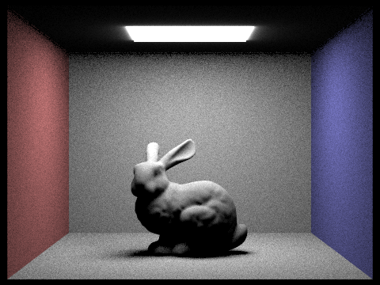
|
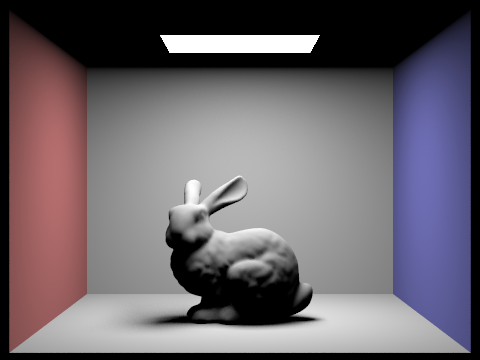
|
|
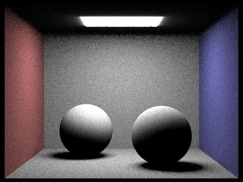
|
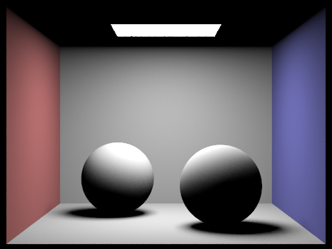
|
The importance sampling method gives a less noisy image since the randomly sampled rays are only taken over the area of the light sources in the scene. This is because in the uniform hemisphere sampling method, the areas of the probability distribution function that contribute the most of to the final radiance value are those that represent where rays hit a light source (in direct illumination, all other objects return a light value of 0). By sampling over only these areas, we are reducing the amount of pixels that should be lit but are darkened because the rays sampled were traced to non-light sources. Other ways to reduce noise besides switching to light (importance) sampling would be either taking more samples per pixel, or increasing the total area of light sources compared to other objects in the scene. Importance sampling is ultimately better than simply taking more samples since there will still be noise in hemisphere sampling even for a high sapmle count, as we can see in the CBbunny.dae and CBsphere.dae images above. The importance sampling is potentially more computationally heavy since we sample random rays over each light source for each pixel sample, meaning we multiply the number of samples in hemisphere sampling by the number of light sources. (In the project code, we make the number of samples for each method the same so that the quality of the images can be compared easily.) Because in importance sampling we don't need to consider every ray traced (some of them are "shadow rays"), and because fewer samples are needed to produce less noisy results, it is ultimately more efficient.
Below is the bunny example rendered using importance sampling at 1, 4, 16, and 64 light rays respectively:
|
|
|
|
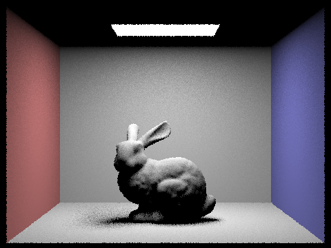
|
|
In the 4 images above, the noise decreases as the number of light rays sampled increases. This is because there is still some noise created when randomly sampling rays across a large light source, as there is more potential for one of the rays to be blocked by another object (this is most clear in the shadow beneath the bunny).